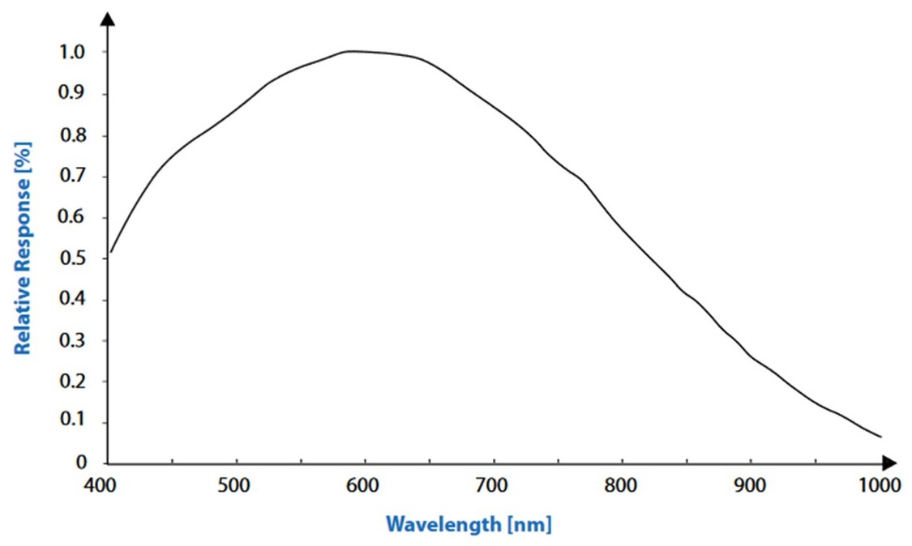
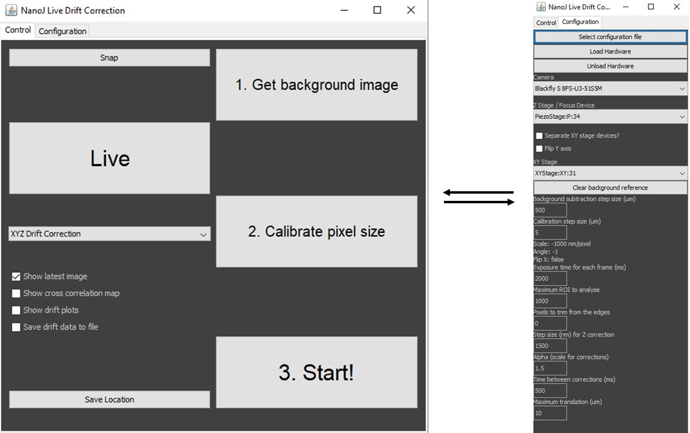

Description
This module provides the capability for infra-red brightfield imaging concurrently with visible band fluorescence. This hardware is combined with custom software to conduct image based, deep autofocus at up to 50 microns in depth. We have found this especially useful in imaging samples set in agarose microholes (used in Whitley et al bioRxiv 2020) where the cells themselves are held away from the cover surface.

Parts
Construction
👁 View CAD Design Online 👁
As this module has only one pathway and no degrees of freedom for adjustment it can be constructed and attached to the system simply following the designs. The combiner cube is the only part that needs alignment and this is detailed in the Main Body module.
The suggested camera suffers from reduced sensitivity through the IR range. As such poor performance has been observed when operating this system at 1050nm due to low SNR. Because of this, and in spite of the clash with the Focus Shifter module, it is recomended to operate at 850nm for good performance.
Software
This is a MicroManager hardware autofocus plugin developed between the Henriques and Holden laboratories. This plugin will perform microscopy autofocus using the cross correlated signal from infrared brightfield microscopy. It is based on the principle described in McGorty et al, Optical Nanoscopy 2013.
👁 Get Software from GitHub 👁Instructions
Installation
From the folder "dist" in the GitHub repository, copy "DriftCorrectRH.jar" and the content of the "lib" folder into the Micromanager "plugins/micro-manager" directory. In the case of these files already existing in the target directory, the target directory files should be retained.
The camera used for this module must be added to the MicroManager config file. Instructions are available here to install the required drivers.
The plugin may now be launched in MicroManager from "plugins/Beta/NanoJ Online Drift Correction". On opening, the Config file containing the camera's device adapter should be loaded using the "select configuration file" and "load hardware" buttons under the configuration tab.
Use
To use the plugin, First "get background image" to perform background subtraction. The stage will scan around the sample to record multiple fields of view for averaging.
Next "calibrate pixel size" to ensure that the magnitude of drift is measured correctly
"Start" takes a reference z-stack and begins the drift correction protocol selected using the puldown menu.
Variables
- Background subtraction step size: Lateral move between background subtraction images.
- Calibration step size: Sets the depth between the images of the reference z-stack taken at the beggining of a run.
- Exposure time: Exposure time of the camera, should be balanced to minimise LED power and motion blur.
- Maximum ROI to analyse: Sets the size of the area to perform cross-correlation on.
- Pixels to trim from edges: Removes edge pixels from cross-correlation calculations.
- Step size for Z correction:
- Alpha (scale for corrections): Scale factor for corrections to avoid over/under corrections (applies to Z only).
- Time between corrections: Sets the dwell time between stage corrections to avoid high frequency corrections to noise. Must be set greater than the set exposure time.
- Maximum translation: Limit on shift to prevent stage crashing.